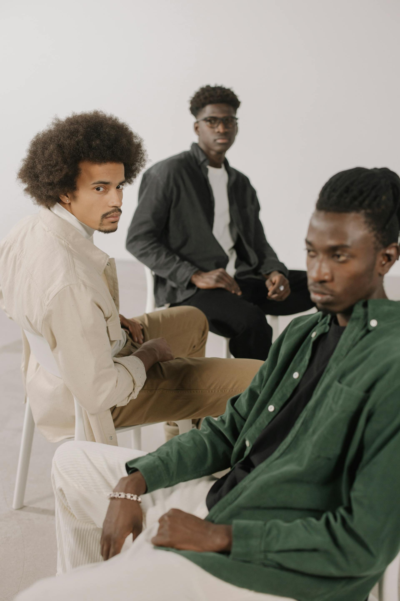

<section class="py-24 mt-32 px-4 sm:px-6">
  <div
    class="max-w-[1200px] mx-auto grid grid-cols-1 lg:grid-cols-2 gap-10 lg:gap-16 items-center"
  >
    <!-- Imagem grande com hover sutil -->
    <div
      class="w-full h-[300px] sm:h-[400px] lg:h-[600px] overflow-hidden rounded-xl relative group"
    >
      
    </div>

    <!-- Bloco de texto -->
    <div class="flex flex-col justify-center gap-6 text-start">
      <h2
        class="text-3xl sm:text-4xl font-extrabold text-gray-900 leading-tight"
      >
        Estilo que fala por você
      </h2>

      <p class="text-base sm:text-lg text-gray-600 max-w-prose">
        Uma seleção feita pra quem valoriza presença. Looks que acompanham seu
        ritmo — do casual ao elegante — com peças que unem forma, função e
        atitude.
      </p>

      <ul
        class="grid grid-cols-1 sm:grid-cols-2 gap-4 text-sm text-gray-800 font-medium"
      >
        <li class="flex items-center gap-2">
          <div class="w-2.5 h-2.5 bg-gray-900 rounded-full"></div>
          Tecido inteligente e respirável
        </li>
        <li class="flex items-center gap-2">
          <div class="w-2.5 h-2.5 bg-gray-900 rounded-full"></div>
          Design minimalista e funcional
        </li>
        <li class="flex items-center gap-2">
          <div class="w-2.5 h-2.5 bg-gray-900 rounded-full"></div>
          Versatilidade pro dia inteiro
        </li>
        <li class="flex items-center gap-2">
          <div class="w-2.5 h-2.5 bg-gray-900 rounded-full"></div>
          Paleta sóbria com impacto visual
        </li>
      </ul>

      <!-- Selo final com efeito visual -->
      <div class="relative mt-2 pl-6">
        <div
          class="absolute left-0 top-1 w-1 h-full bg-gray-900 rounded-full"
        ></div>
        <p class="text-sm text-gray-700 italic leading-snug">
          Autenticidade não precisa de legenda — ela é sentida em cada detalhe.
        </p>
      </div>
    </div>
  </div>
</section>
